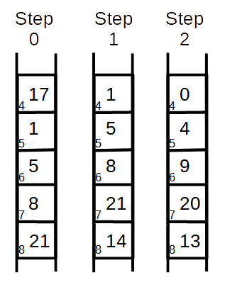

Introduction
Hardware rotors are represented in the simulation using python lists.
When the physical rotor is advanced one position the python list
must be modified (advanced one position).
It requires two steps.
- move the list entries up one
This rotates the rotor one position.
This changes the "IN" points in the list.
For example:
(list indexes) 0 -> 26, 1 -> 0, 2 -> 1, 3 -> 2, ...
(characters) A -> Z, B -> A, C -> B, D -> C, ...
- reduce the list values by one
Because the rotor is made of physical wires they don't change lengths.
The rotor list "IN and "OUT" points must remain a fixed
distance apart. If you move the "IN" point, you must move the "OUT" point.
This changes the "OUT" points in the list.
Advance Rotor
